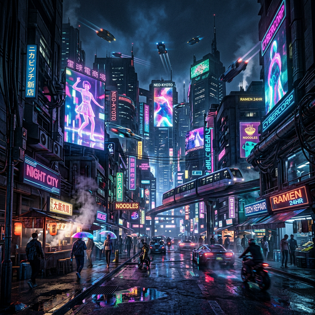
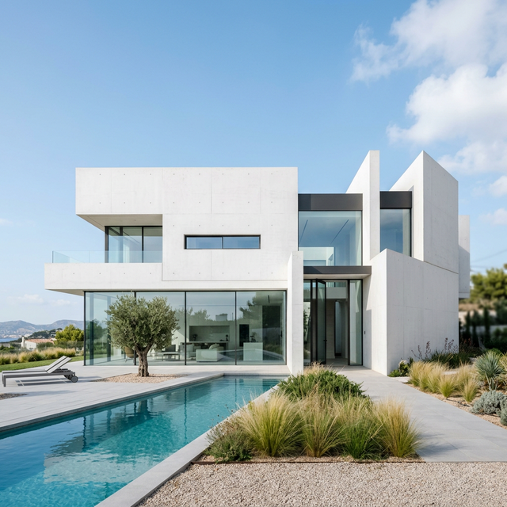

✦ AR Gallery
Universal AR — Works on any phone
Step 1 — Show this Hiro Marker on your PC:

Point your phone camera at the marker on your PC screen. Photos will float above it.
Universal AR — Works on any phone
Step 1 — Show this Hiro Marker on your PC:
Point your phone camera at the marker on your PC screen. Photos will float above it.

